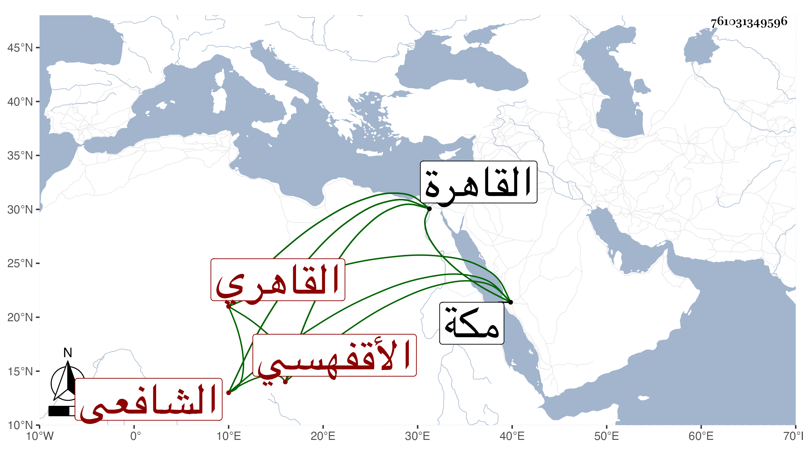

0902Sakhawi.DawLamic.ITO20230111-ara1.EIS1600.761031349596
Biography ID: 761031349596
50
محمد بن أحمد بن عماد بن يوسف بن عبد النبي الشمس أبو الفتح بن الشهاب أبي العباس الأقفهسي القاهري الشافعي الماضي أبوه ويعرف كأبيه بابن العماد . ولد في ليلة مستهل رمضان سنة ثمانين وسبعمائة بالقاهرة ونشأ بها فقرأ القرآن والعمدة والشاطبية والمنهاجين الفرعي والأصلي وألفية ابن ملك ، وعرض على البلقيني وغيره وسمع على التنوخي والسراج الكومى وأبي عبد الله الرفا والفرسيسي وناصر الدين بن الميلق والحلاوي والسويداوي وآخرين ، وأجاز له أبو الخير بن العلائي وأبو هريرة بن الذهبي وناصر الدين بن حمزة ويوسف بن السلار وجماعة وأخذ الفقه عن أبيه وغيره وبحث عليه في الأصول والعربية وعلى الفخر الضرير إمام الأزهر الشاطبية وكتب عن الولى العراقي كثيرا من أماليه وحضر دروسه ودروس جماعة وبرع في الفقه وشارك في العربية وغيرها ، وتكسب بالشهادة فاستغفلوه ، وتنزل بسعيد السعداء وكان ساكنا ظاهرا الجمود حريصا على الاشتغال والجمع والمطالعة والكتابة عجبا في ذلك مع كبر سنه تام الفضيلة لكن لا يعلم ذلك منه إلا بالمخالطة ، وقد أقرأ في الفقه وغيره بالقاهرة وبمكة حين مجاورته بها وولي بعد أبيه التدريس ببعض مدارس منية ابن خصيب وكان يتوجه إليها أحيانا ويقيم هناك أشهرا ، وحدث سمع منه الفضلاء وكنت أول من أفاد سماعه لأصحابنا وقرأت عليه أشياء ، وحج مرتين الأولى مع أبيه في سنة ثمانمائة والثانية في موسم سنة أربع وخمسين وجاور التي بعدها وفيها قرأ عليه المحب بن أبي السعادات بن ظهيرة تنوير الدياجير بمعرفة أحكام المحاجير والإعلام بما يتعلق بالتقاء الختانين من الأحكام كلاهما من تأليفه وله أيضا الذريعة إلى معرفة الأعداد الواردة في الشريعة يذكر مثلا ما ورد في لفظ الواحد في الكتاب والسنة وكذا الاثنان والثلاثة وهكذا والشرح النبيل الحاوي لكلام ابن المصنف وابن عقيل وايقاظ الوسنان بالآيات الواردة في ذم الانسان والألفاظ العطرات في شرح جامع المختصرات كتب منه من أوله إلى آخر اللقيط ومن أثناء الجنايات إلى آخر الكتاب وقد طالع شيخنا تصنيفه الذريعة وسمعته يقول لعله من تصانيف أبيه ظفر به في مسودته ، وكان ممن يحضر عنده في مجلسه ويقال انه كان يتكلم عنده بما ينسب من أجله لعدم البراعة . مات فجأة وهو متوجه لمكان له يصلحه تجاه باب الخرق في يوم السبت خامس ربيع الأول سنة سبع وستين رجمه الله وإيانا .
